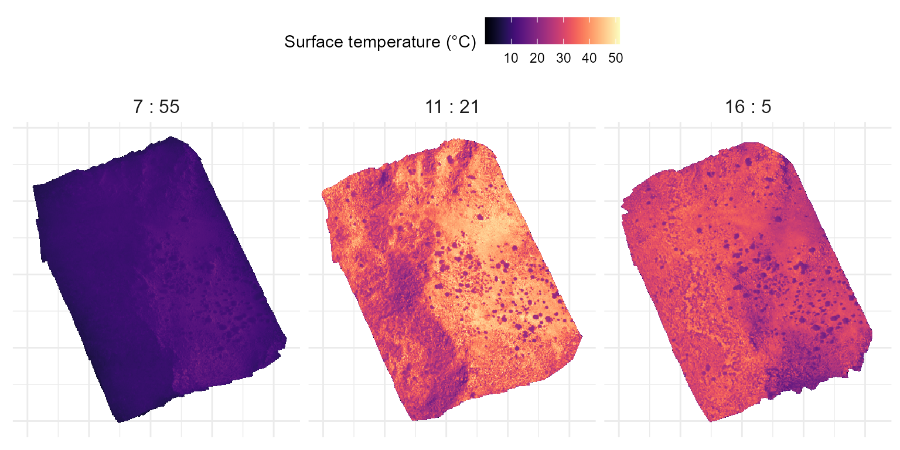
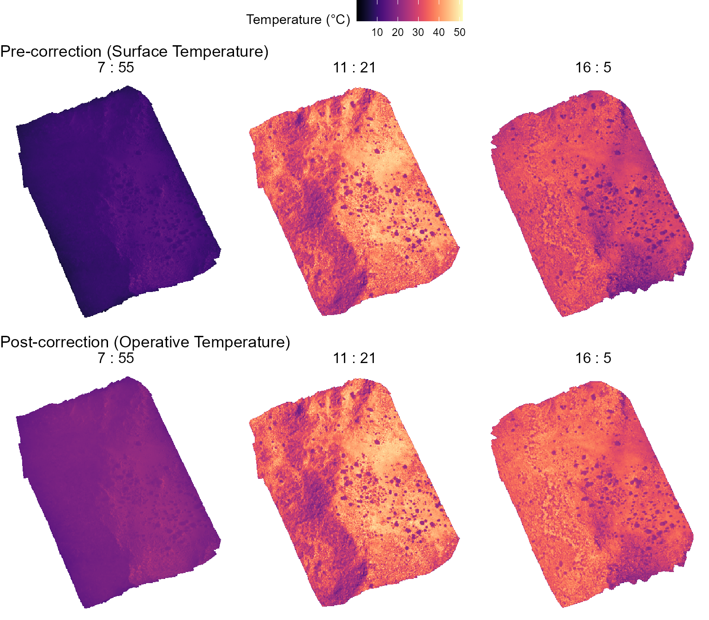
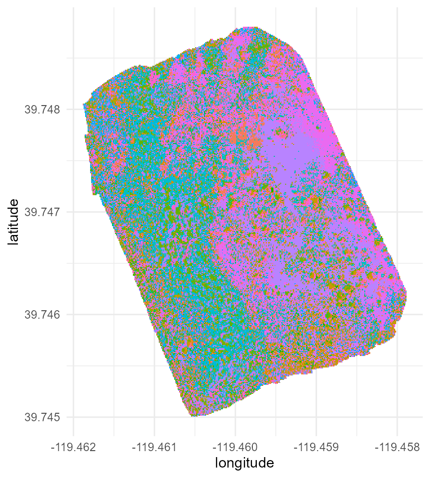
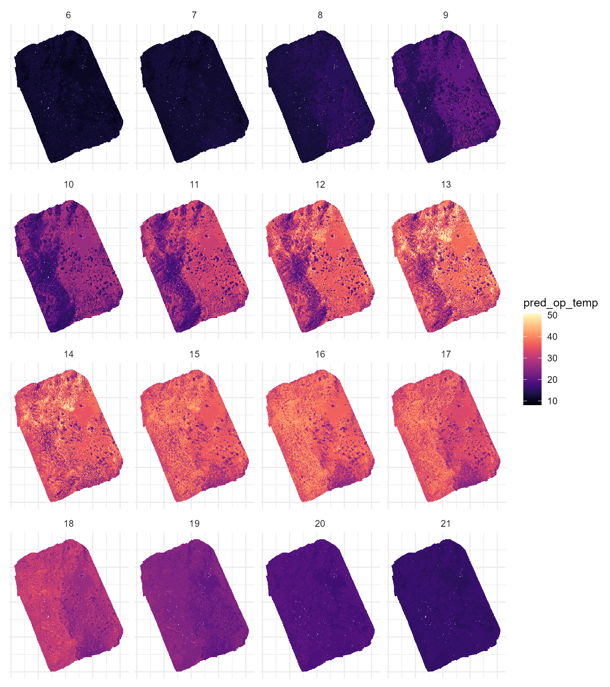
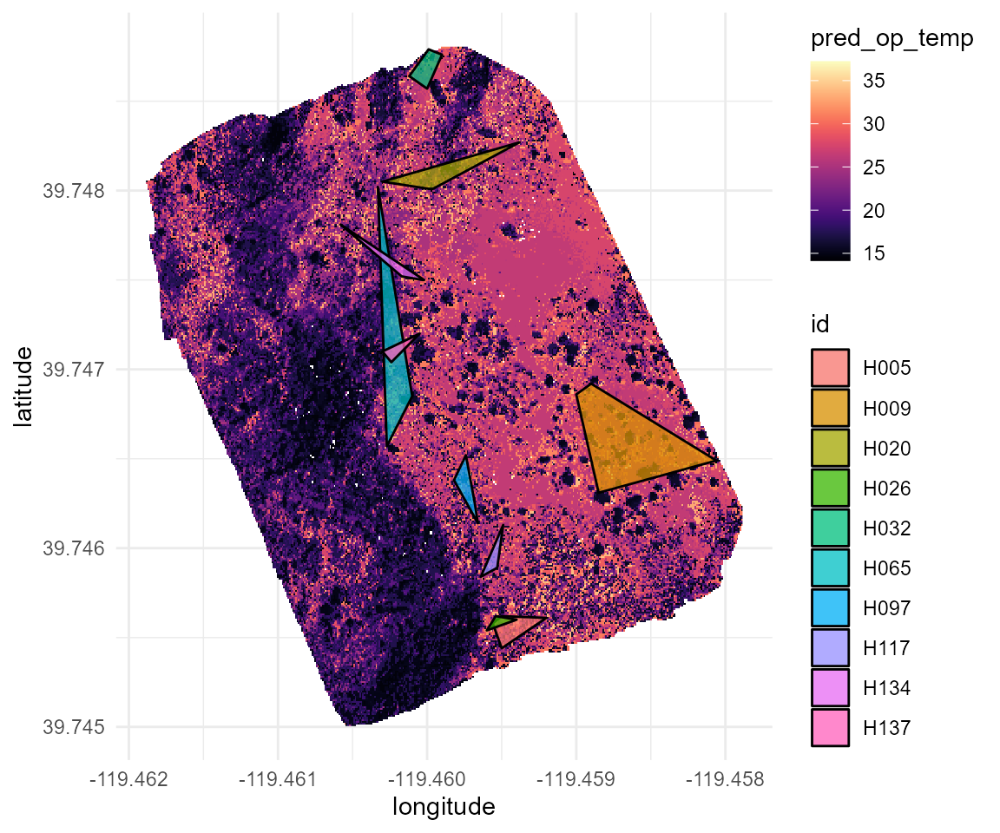
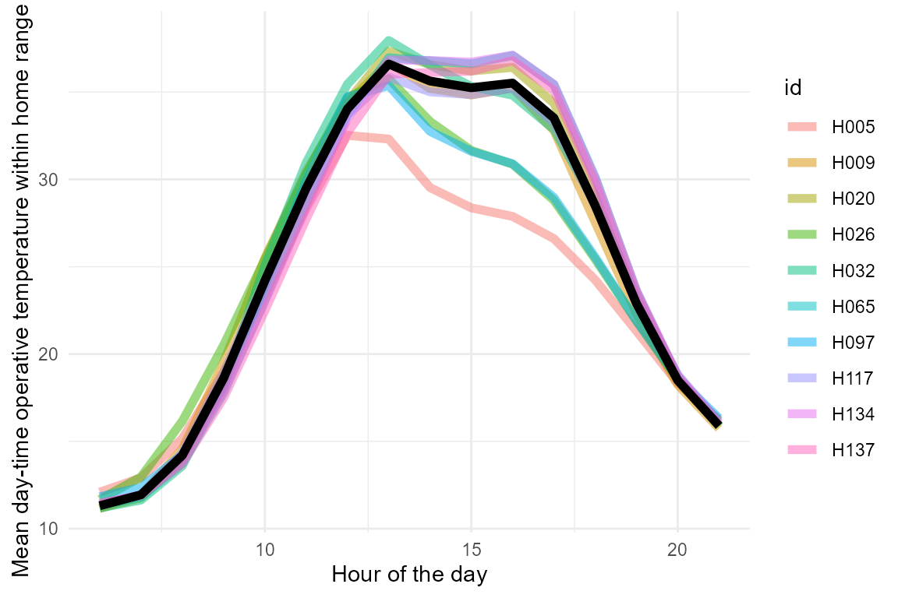
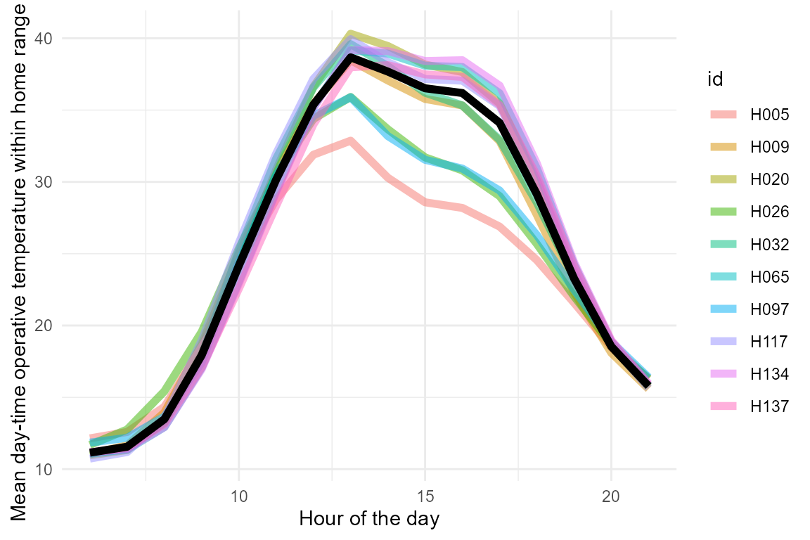

A worked out example: Thermoregulation in high elevation lizards
example.RmdOverview
In this vignette we illustrate a case study to serve as a worked out
example on how to implement the throne method. In this
example, we will be looking at the thermal environment experienced by a
population of western fence lizards (Sceloporus occidentalis)
living at approximately 2400 m of elevation in the Great Basin of
Northern Nevada and undergoing mark-recapture. Following the
throne method, we will first describe our field methodology
(i.e., flights conducted, operative temperature model deployment etc.),
then describe the analysis ran in R using the
throne package and finally offer some insights on how the
throne method could be used in ecological studies.
Study area and organism
The population of western fence lizards discussed in this example inhabits a high elevation outcrop in the Great Basin of Northern Nevada. The site is characterized by a mosaic of sagebrush and pinyon-juniper woodlands interrupted by rocky outcrops of varying sizes. The area of interest also has a remarked degree of topographic heterogeneity with a ridge along the north-south axis dividing into two slopes: one eastern-facing with a gentle slope and the other western-facing with a steep slope that in some areas becomes a precipice:

Study area within the Great Basin of Northern Nevada, the red rectangle indicates the specific area of interest we will be focusing on.
Topography of the area of study. A ridge divides the area between an eastern-facing side a relatively gentle slope and a western-facing side with a steep slope even becoming a precipice in some spots
The study organism for this example is the western fence lizard (Sceloporus occidentalis), a common lizard of the western US that is locally abundant in our study area. This lizard is predominately spotted in the rocky outcrops that interrupt the landscape which it uses to bask during day-time hours. In this example, we will focus on 10 adult lizards that underwent mark-recapture during the month August of 2022.

A western fence lizard basking on a rock in the study area. Note that this individual is marked through a color combination painted on its side (Blue - Silver - Pink) used to identify it in the field.
Field workflow
Collect and process thermal images.
We flew 3 flights over an ~ 95000 \(m^2\) area overlapping with the areas that
we surveyed as part of the lizard mark-recapture. Two flights were
conducted on the same day (08/04/2022) at
07:55 and 11:21 and a third flight was
conducted 2 days later at 16:05. Here’s the metadata file
for flights conducted:
## flight_id date time_start time_end
## 1 c_flight_1 8/6/2022 16:05 16:28
## 2 c_flight_2 8/4/2022 11:21 11:45
## 3 c_flight_3 8/4/2022 7:55 8:19All flights were processed using the software Pix4D
following the steps we present in the Collecting
and process thermal images vignette included as part of the
throne documentation to obtain 3 thermal orthomosaic files
(i.e., .tif files).
Collect and process operative temperature data
We 3D printed 150 operative temperature models using ABS plastic of the same shape, size and painted them to match the reflective properties of the western fence lizard. Inside of each model, we placed a Thermocron iButton logger set to record temperature every 60 minutes. We deployed these OTMs randomly throughout the site as, at the time, we did not have the expertise necessary for a more informed deployment. Fortunately, the sheer number of OTMs deployed enabled us to capture a wide enough range of micro habitats.
An operative temperature model of the type used for this study.
The OTM metadata file we assembled looked like:
## # A tibble: 150 × 3
## otm_id latitude longitude
## <chr> <dbl> <dbl>
## 1 H1 39.7 -119.
## 2 H2 39.7 -119.
## 3 H3 39.7 -119.
## 4 H4 39.7 -119.
## 5 H5 39.7 -119.
## 6 H6 39.7 -119.
## 7 H7 39.7 -119.
## 8 H8 39.7 -119.
## 9 H9 39.7 -119.
## 10 H10 39.7 -119.
## # ℹ 140 more rows
ggplot() +
geom_tile(data = c_flights_data, aes(x = longitude, y = latitude)) +
geom_point(data = c_otms_metadata, aes(x = longitude, y = latitude), size = 2, shape = 21, fill = "orange") +
theme_minimal()Map of the study area (shaded) with the locations of the OTMs deployed. Note that not all OTMs fell inside of the area of study but due to their proximity, they can be used for subsequent analysis within the pipeline
R workflow
Reading and processing flights data
Following the R workflow specified in the
throne package, the first step is to read and process the
flights data. An important part of this step is to specify the
digits argument which will set the spatial resolution of
each of the tiles in our final thermal landscape prediction. For this
example, we choose to set digits = 5 as, at this latitude,
this will lead to a tile area of ~ 0.95 \(m^2\), which is representative of a micro
habitat a lizard might be experiencing. We read and process the flights
data using the rnp_flights_data function as follows:
# set files path
flight_files_path <- "x" # This would be a folder within the user's computer, not specified here
# read the metadata file
c_flights_metadata <- read.csv("data/case_flight_data.csv")
# read and process flights data
c_flights_data <- rnp_flights_data(path = flight_files_path, metadata = c_flights_metadata, digits = 5)The outcome will be a flights data tibble storing all of
surface temperature (ir_temp) measurements collected across
all flights:
c_flights_data## # A tibble: 304,368 × 7
## longitude latitude ir_temp year doy mod_start mod_end
## <dbl> <dbl> <dbl> <dbl> <dbl> <dbl> <dbl>
## 1 -119. 39.7 17.8 2022 218 965 988
## 2 -119. 39.7 18.2 2022 218 965 988
## 3 -119. 39.7 13.5 2022 218 965 988
## 4 -119. 39.7 26.8 2022 218 965 988
## 5 -119. 39.7 24.5 2022 218 965 988
## 6 -119. 39.7 18.0 2022 218 965 988
## 7 -119. 39.7 27.3 2022 218 965 988
## 8 -119. 39.7 27.2 2022 218 965 988
## 9 -119. 39.7 22.1 2022 218 965 988
## 10 -119. 39.7 22.7 2022 218 965 988
## # ℹ 304,358 more rowsWe can plot this data using ggplot2 tools to already get
a sense of the thermal characteristics of the study area:
c_flights_data %>%
mutate(hour = paste(floor(mod_start/60),":", mod_start - floor(mod_start/60) * 60)) %>%
mutate(hour = fct_reorder(hour, mod_start)) %>%
ggplot(aes(x = longitude, y = latitude, fill = ir_temp)) +
geom_raster() +
scale_fill_viridis(option = "magma") +
facet_grid(cols = vars(hour)) +
theme_minimal() +
theme(strip.text = element_text(size = 12))
Reading and processing OTMs data
The next step would be to read and process the data collected via the
OTMs. We can do this through the rnp_otms_data function
from the throne package. Before we do that, we should check
the structure of our raw OTM .csv files. In this example
they look like this:
## raw_date_time temp otm
## 1 6/13/2022 14:18 27.0 H22
## 2 6/13/2022 15:18 18.0 H22
## 3 6/13/2022 16:18 21.5 H22
## 4 6/13/2022 17:18 16.0 H22
## 5 6/13/2022 18:18 10.0 H22
## 6 6/13/2022 19:18 8.0 H22By taking a look at this (and other files) we can tell that there is
no need to skip any rows when reading them as .csv which
means that we can set the rows_skip argument of
rnp_otms_data to 1, such that it can start
reading from the first row. We can also see that the column
raw_data_time contains information on both the date and the
time of each measurement and thus, that we should set the
date_col argument to 1. We could also specify
time_col = 1, but that’s not necessary as if no
time_col is specified, rnp_flights_data will
assume that date_col = time_col. Lastly, we can see from
this file that the operative temperature measurements are stored in the
second column and that, as a result, we should set the
op_temp_col argument to 2. With this in mind,
we can read and process the OTM data as follows:
# specify the path to where the OTM .csv files are stored
c_otms_path <- "data/case_otm_data"
# specify the OTM metadata file
c_otms_metadata <- read.csv("data/case_otm_metadata.csv")
# read and process OTMs data
c_otms_data <- rnp_otms_data(path = c_otms_path, metadata = c_otms_metadata, rows_skip = 1, date_col = 1, op_temp_col = 2)The outcome will be an OTM data tibble containing all
the observations made by all OTMs:
as_tibble(c_otms_data)## # A tibble: 262,016 × 7
## otm_id year doy mod op_temp latitude longitude
## <chr> <dbl> <dbl> <dbl> <dbl> <dbl> <dbl>
## 1 H1 2022 164 910 15 39.7 -119.
## 2 H1 2022 164 970 17 39.7 -119.
## 3 H1 2022 164 1030 16 39.7 -119.
## 4 H1 2022 164 1090 15.5 39.7 -119.
## 5 H1 2022 164 1150 13 39.7 -119.
## 6 H1 2022 164 1210 9 39.7 -119.
## 7 H1 2022 164 1270 4 39.7 -119.
## 8 H1 2022 164 1330 2.5 39.7 -119.
## 9 H1 2022 164 1390 2 39.7 -119.
## 10 H1 2022 165 10 1 39.7 -119.
## # ℹ 262,006 more rowsGenerate OTM spline models
Having read the OTMs data, the next step is to define cubic
splines models to describe the thermal dynamics of each OTM on
each doy during its deployment. To do this, we can use the
gen_otm_splines function of the throne
package. For this step, a crucial user input is the knot_p
parameter which will determine the “wiggliness” of the spline model. Choosing
th appropriate knot_p value is dependent on the
recording frequency at which we set our OTMs and the thermal properties
of the organism of interest itself. Based on the thermal properties of
our organism of interest (Sceloporus occidentalis), we would
ideally a spline model with 1 knot for every 15 minutes, which is the
typical time this lizard takes to acclimate to a new temperature.
However, OTMs recorded at a frequency of 1 observation / hour. At this
low frequency, we want to preserve as much information on the thermal
fluctuations of the OTM as possible which is why setting
knot_p = 1 works fine. To obtain the spline models, we can
simply run:
c_otms_splines <- gen_otm_splines(otm_data = c_otms_data, knot_p = 1)Which returns a nested tibble with all
otm_id & doy specific models (in the
column spline):
c_otms_splines## # A tibble: 11,008 × 6
## otm_id year doy latitude longitude spline
## <chr> <dbl> <dbl> <dbl> <dbl> <list>
## 1 H1 2022 164 39.7 -119. <smth.spl>
## 2 H1 2022 165 39.7 -119. <smth.spl>
## 3 H1 2022 166 39.7 -119. <smth.spl>
## 4 H1 2022 167 39.7 -119. <smth.spl>
## 5 H1 2022 168 39.7 -119. <smth.spl>
## 6 H1 2022 169 39.7 -119. <smth.spl>
## 7 H1 2022 170 39.7 -119. <smth.spl>
## 8 H1 2022 171 39.7 -119. <smth.spl>
## 9 H1 2022 172 39.7 -119. <smth.spl>
## 10 H1 2022 173 39.7 -119. <smth.spl>
## # ℹ 10,998 more rowsCorrecting flight data
Due to the
inherent differences in the physical properties of the surface
temperature measurements from an IR camera and the operative temperature
measurements from an OTM, the next step in the throne
package workflow is to correct the data obtained via flights using OTM
flights data. To achieve this, we will use the
correct_flighs_data function as follows:
c_flights_data_corr <- correct_flights_data(flights_data = c_flights_data, otm_splines = c_otms_splines)We can visualize below the effects of the correction process
(Post-correction) with respect to the data from the
original flights (Pre-correction).
# plot the flights pre-correction
pre_corr <- c_flights_data %>%
mutate(hour = paste(floor(mod_start/60),":", mod_start - floor(mod_start/60) * 60)) %>%
mutate(hour = fct_reorder(hour, mod_start)) %>%
ggplot(aes(x = longitude, y = latitude, fill = ir_temp)) +
geom_raster() +
scale_fill_viridis(option = "magma") +
facet_grid(cols = vars(hour)) +
ggtitle("Pre-correction") +
theme_minimal()
# plot the flights post-correction
post_corr <- c_flights_data_corr %>%
mutate(hour = paste(floor(mod_start/60),":", mod_start - floor(mod_start/60) * 60)) %>%
mutate(hour = fct_reorder(hour, mod_start)) %>%
ggplot(aes(x = longitude, y = latitude, fill = op_temp)) +
geom_raster() +
scale_fill_viridis(option = "magma") +
facet_grid(cols = vars(hour)) +
ggtitle("Post-correction") +
theme_minimal()
grid.arrange(pre_corr, post_corr, nrow = 2, ncol = 1)
Match flight to OTM data
The last step before being able to predict thermal landscapes is to
match the thermal dynamics of each of the tiles within our corrected
flights data to the dynamics of a given OTM. To achieve this, we can use
the match_data function from the throne
package. To use this function, two user-specific inputs are needed:
coverage_per and error_max. The first one
determines the degree of coverage across multiple flights that a tile
needs to have in order to be considered in the matching process. As seen
below, our flights had a particularly good overlap:
c_flights_data_corr %>%
group_by(latitude, longitude) %>%
summarise(coverage_per = 100*(n()/3)) %>%
ggplot(aes(x = longitude, y = latitude)) +
geom_raster(aes(fill = coverage_per)) +
guides(fill = guide_colorbar(title = "Coverage (%)")) +
theme_minimal()In our case, we can set coverage_per = 1 to ensure that
only areas covered across all flights are considered although, for a
greater number of flights we would recommend setting
coverage_per = 0.9. The second input
(error_max) determines the maximum average absolute error
between a tile and OTM dynamics that should be specified as a threshold
for the matching. If the average absolute difference between a tile’s
thermal dynamics and the OTM that best describes it is >
error_max, that tile is not matched to any OTM and thus
should not be considered. In this case, we will follow our own
specifications and set error_max = 5. Now, we can run the
match_data function as follows:
c_matches <- match_data(flights_data = c_flights_data_corr, otm_splines = c_otms_splines, coverage_per = 1, error_max = 5)The result will be a matches tibble with the OTM that
best describes the dynamics of each tile in the site. In the figure
below, each tile is colored according to the otm_id that
best represents it’s thermal dynamics.
c_matches## # A tibble: 98,363 × 4
## latitude longitude otm_id error
## <dbl> <dbl> <chr> <dbl>
## 1 39.7 -119. NA NA
## 2 39.7 -119. H121 0.842
## 3 39.7 -119. H6 2.17
## 4 39.7 -119. H16 3.06
## 5 39.7 -119. H4 1.39
## 6 39.7 -119. H56 2.44
## 7 39.7 -119. H78 2.15
## 8 39.7 -119. H132 2.89
## 9 39.7 -119. H36 1.86
## 10 39.7 -119. H6 1.32
## # ℹ 98,353 more rowsWe can visualize the results of the matching step as shown below:

Without need for user-specified input, the matching process identified the topography of the terrain, assigning different OTMs to the eastern and western facing sides of the ridge that divides the site.
Predicting thermal landscapes
Using all the above, we can finally predict the thermal landscapes of
the site using the predict_thermal_landscape function of
the throne package. As an example, below we predict the
thermal landscape every hour between 6 AM (mod = 360) and 9
PM (mod = 1260) on August 10th (doy = 222). To
obtain this prediction we’d simply run:
example_prediction <- predict_thermal_landscape(matches = c_matches, otm_splines = c_otms_splines, doy = 222, mod = seq(360,1260, by = 60))## [1] "0.01 % of predictions were removed due to falling outside of the time when OTMs were recording"We can visualize it as follows:
example_prediction %>%
filter(!is.na(mod)) %>%
ggplot(aes(x = longitude, y = latitude, fill = pred_op_temp)) +
geom_raster() +
scale_fill_viridis(option = "magma") +
facet_wrap(~mod/60) +
theme_minimal() +
theme(axis.text = element_blank(), axis.title = element_blank()) Each panel above shows the predicted thermal landscape of the entire site at a given hour of the day.
Ecological application of the method
Once we obtain the prediction of the thermal landscape we can use it to infer characteristics of the thermal environments experienced by the organism of interest. As an example, here we integrate the thermal landscape prediction with the spatial distribution of the home ranges of 10 individual lizards of our population of interest. Below is the mark-recapture example data set we will use:
lizard_mr## # A tibble: 36 × 7
## id sex year doy mod latitude longitude
## <chr> <chr> <int> <dbl> <dbl> <dbl> <dbl>
## 1 H005 M 2022 175 720 39.7 -119.
## 2 H005 M 2022 200 767 39.7 -119.
## 3 H005 M 2022 173 678 39.7 -119.
## 4 H005 M 2022 180 720 39.7 -119.
## 5 H009 M 2022 193 704 39.7 -119.
## 6 H009 M 2022 216 630 39.7 -119.
## 7 H009 M 2022 173 753 39.7 -119.
## 8 H009 M 2022 214 784 39.7 -119.
## 9 H020 M 2023 166 765 39.7 -119.
## 10 H020 M 2022 195 774 39.7 -119.
## # ℹ 26 more rowsOur spatially explicit mark-recapture data set allows us to estimate each individual’s territory as an individual-specific minimum convex polygon. We can plot each individual’s home range on top of the predicted thermal landscape at 10 AM as an example:
# load necessary package to add a second fill scale
library(ggnewscale)
# plotting
ggplot() +
geom_raster(data = example_prediction %>% filter(mod == 10*60),
aes(x = longitude, y = latitude, fill = pred_op_temp)) +
scale_fill_viridis(option = "magma") +
new_scale_fill() +
geom_polygon(data = lizard_mr,
aes(x = longitude, y = latitude, fill = id),
alpha = 0.75, col = "black", linewidth = 0.5) +
theme_minimal()
We can hen calculate the average predicted operative temperature experience by each individual within their home range as:
# holder object
example_pred_lizards <- tibble(id = c(), latitude = c(), longitude = c(), mod = c(), pred_op_temp = c())
# get unique lizard id list
lizard_list <- unique(lizard_mr$id)
# loop to filter the prediction for each unique lizard's home range
for(i in 1:length(lizard_list)){
# select polygon for the lizard
lizard_polygon <- lizard_mr %>% filter(id == lizard_list[i])
# filter thermal landscape for rough home-range for each lizard
rough_home_range <- example_prediction %>%
filter(longitude >= min(lizard_polygon$longitude) & longitude <= max(lizard_polygon$longitude) &
latitude >= min(lizard_polygon$latitude) & latitude <= max(lizard_polygon$latitude)) %>%
mutate(id = lizard_list[i]) %>%
select(id, latitude, longitude, mod, pred_op_temp)
# bind to holder object
example_pred_lizards <- rbind(example_pred_lizards, rough_home_range)
}NOTE: The above is an approximation, for more detailed (and accurate) method to estimate individual home ranges please consider checking “Using spatial data with R”
We can visualize the average predicted operative temperature experienced by each individual within their home range as follows:
example_pred_lizards %>%
ggplot(aes(x = pred_op_temp, y = id)) +
stat_summary(aes(col = id), linewidth = 1, size = 1) +
ylab("Lizard ID") + xlab("Mean day-time operative temperature within home range (C)") +
theme_minimal() +
theme(legend.position = "none")## No summary function supplied, defaulting to `mean_se()`
As seen above, individuals experience substantially different thermal environments on average, but how does this translate by hour of the day?:
example_pred_lizards %>%
ggplot(aes(x = mod/60, y = pred_op_temp)) +
stat_summary(aes(col = id), geom = "line", linewidth = 2, alpha = 0.5) +
stat_summary(geom = "line", linewidth = 2) +
ylab("Mean day-time operative temperature within home range (C)") +
xlab("Hour of the day") +
theme_minimal()
Lastly, we can consider what is the ecological relevance of the different conditions experienced by each individual by examining the percentage of their home range that falls within their preferred temperature (\(T_{pref}\)), which for this species falls between 30 and 35 C. We can visualize this percentage by hour of the day as follows:
example_pred_lizards %>%
mutate(at_tpref = ifelse(pred_op_temp >= 30 & pred_op_temp <= 35, 1, 0)) %>%
group_by(mod, id) %>% summarise(at_tpref = mean(at_tpref)) %>%
ggplot(aes(x = mod / 60, y = at_tpref * 100)) +
geom_line(aes(col = id), linewidth = 2, alpha = 0.5) +
stat_summary(geom = "line", col = "black", linewidth = 2) +
ylab("% of home range within 30 - 35 C") +
xlab("Hour of the day") +
theme_minimal() Individuals differ substantially on the percentage of their home range that falls within their preferred temperature range. This information can be used to infer the potential impact of the thermal landscape on the fitness of each individual.